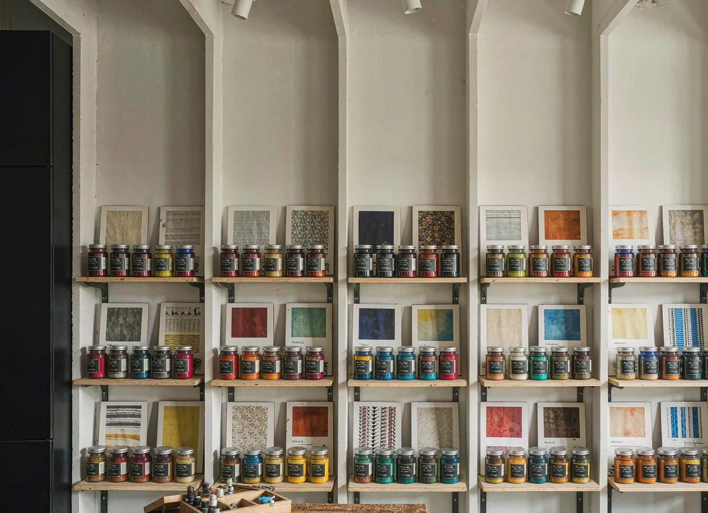
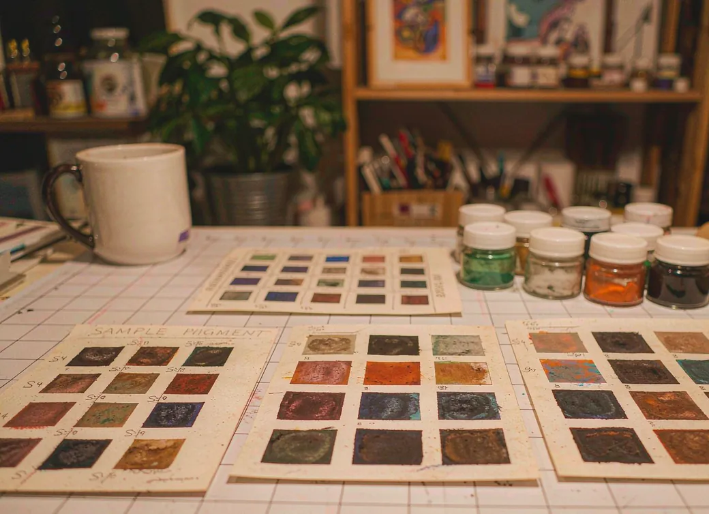

稳定的色彩，
稳定的交付
深耕涂料用有机颜料、无机颜料与氧化铁系列供应，75+ 常用牌号现货，工厂位于上海宝山，全国物流当日响应。为涂料企业提供稳定、合规、可追溯的颜料供应链。
座机 021-56690218 · 联系人 黄建辉 15821682128
- 75+
- 常备色号现货
- 100+
- 服务涂料企业
- 24h
- 发货响应时效
- TDS/MSDS
- 每批随货提供，可追溯
三大产品线，覆盖涂料与建材工业主流着色需求
核心色号速览
色差投诉，多半出在这三处
换了批次，没重新打板
同一牌号不同批次的色相与着色力会有细微浮动，这是颜料本身的特性，不是质量事故。批量投产前用新批次打一次板，比上线之后再回头调配便宜得多。
分散与研磨没跑到位
研磨时间不足、分散剂选型不匹配，都会让颜料团聚、着色力忽高忽低。外观上就表现为同一张配方、两次做出来颜色不一样。
基料或溶剂体系换过
树脂、溶剂体系一换，颜料在其中的润湿与分布随之改变，色相就会偏移。这类问题看着像颜料的问题，实际出在配方适配上。
这三类我们都碰过。把牌号、当前配方体系和看到的色差一起发过来，可以直接帮你定位到是哪一环 —— 提交询盘，或直拨 021-56690218。

小而精，但足够专业
我们是一个小团队，但每个人都在颜料行业里摸爬了很多年。不画饼、不绕弯，把「稳定供货」这件小事做到极致，就是我们存在的意义。
响应快——询价当天回复，急单优先处理
懂行业——熟悉涂料配方与色差控制，建议直接给到点子上
够灵活——小批量起订，试色样品随单附送
需要稳定的颜料供应？
电话或微信，样品免费，报价当天给。我们在上海宝山，欢迎实地考察。
工作日 8:30–18:00 · 上海宝山 · 全国物流当日响应
产品中心
有机颜料 35 个牌号 · 无机颜料 8 个牌号（包膜 / 高包膜 / 经济型）· 氧化铁系列 32 个牌号——全色号支持打样、可追溯、附 TDS/MSDS。
点击任意色号，查看该产品的完整参数与 TDS →
关于峰妍
峰妍新材料科技（上海）有限公司——小而精的工业颜料供应链，让「稳定供货」成为您最省心的环节。

一家专注颜料的公司
峰妍新材料扎根上海宝山，深耕涂料用有机颜料与无机颜料供应。我们不做大而全，只把「选对颜料、按时到货、批次稳定」这一件事做扎实——产品可追溯，每批附 TDS/MSDS，按需小批量打样。
专业选型——懂配方、懂色差，帮您精准匹配颜料
响应迅速——询价当天回复，急单优先处理
灵活供货——小批量起订，样品随单附送
用数字说话
- 75+
- 常备色号现货
- 100+
- 服务涂料企业
- 24h
- 发货响应时效
- TDS/MSDS
- 每批随货提供，可追溯
我们怎么做事
货源稳定、批次稳定、交期稳定。每一批颜料可追溯，附 TDS/MSDS，让您的产品色差可控。
懂配方、懂色差、懂下游应用。从选型到打样，我们直接给建议，不让您在颜料上走弯路。
小批量起订、样品随单附送、急单优先处理。大公司的规模我们给不了，但灵活度一定给足。
找到我们
淞宝路 155 弄 2 号楼 1611 室
手机 15821682128（黄建辉）
急单可电话预约
联系我们
询价、打样、技术咨询，随时找我们。电话或微信直接联系，最快当天答复。
直接联系
淞宝路 155 弄 2 号楼 1611 室